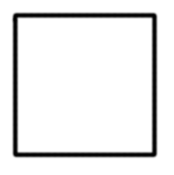
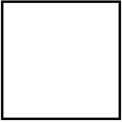

Shifting Mausoleum
Boss Rush 2024 Game Jam
This game jam seemed like a good place to make a game with some friends over a month. On the genre of boss rushes, with the revealed theme of "exchange", this was a good opportunity to make some features I've wanted to make for a long time. And so my tasks for the game included a lot of things: environment generation, spellcasting and spells, animation and locomotion systems, and more. Covering everything would be excessive and write-ups take a while to make so I'll cover topics I find pretty cool.
Environment Generation
The goal of the environment is to produce an arena that thematically and functionally matches the boss to be generated for the level. In order to so, I started with the idea that the environment could be built from a sequence of major parameters which would provide ranges or sets for ensuing minor parameters. The parameters would then have to be translatable to the bosses for generation, so they couldn't be too descriptive early on. I decided the major parameters would be arena type, arena size, arena theme, and the time of day. The arena type would determine rule sets for generation, generally in the form of booleans. The arena size would determine the ranges of values within the rule sets of the arena type to pick from. The arena theme would determine the assets to populate the space generated from the rule sets of the arena type, as well as update to work with the arena type. The time of day would decide functionally arbitrary things like lighting, post process effects and such, yet could hold the potential for more in terms of boss generation. In order to be versatile and allow an additive approach to new content, all of these parameters were made as enumerations. This will come in handy later, but now that these are outlined, we can hop into the fun part.
Geometry Is Cool
The first type of arena I wanted to create was a colosseum. Ancient Rome styled, nearly circular in shape, and have patterns on the walls to cover the like of columns, balconies, windows, and more while also having objects on the floor like rubble or corpses as well as different types of roofs. This would require many things, but some of these could be determined later on. To accommodate the variety of arena types, each layer of the arena was split with its own logic. The floor would be constructed as a flat square, in which a circle would be inscribed such that its radius touches but does not surpass the midpoint of each side of the square. The next step would be to inscribe a polygon within this circle such that the vertices of the polygon either lie on or within the circumference of the inscribed circle, and using the length and interior angle of each side of the polygon to build the walls of the environment. The third and final step would be build the roof, which depending on the arena type could follow various behavior.
The Floor
The general rule for floor generation is straight forward - at its' simplest level, we use a grid of rows and columns to create our square environment. At each index, we plop a mesh that constitutes a floor "tile" and offset the next tile by the mesh size along the axes of rows and columns until we have a nice square. The depth in this method expands into what additional parameters we can add to this placement under what conditions to allow us to create a more unique floor. Though since an asset pack was used for this project, the meshes did not necessarily follow a scheme that aligns with simpler placement method at all cases. Origins were offset from the center for some assets, and dead center for others, some mesh orientations were not aligned to a particular axis, and more meaning that determining a general placement behavior would be crucial in order to have variety.
Not every floor tile needs to be square, they just need to be not too abstract in shape such that they can leave gaps in the floor. We also do not necessarily want them to be exact repeating patterns as well, so we need a scheme that allows them to rotate along the necessary axis/axes to diversify our floor. A simple solution for this is to associate a vector determining the dimensions of the mesh with the desired floor asset so that instead of iterating on its local bounds, we can use this pre-defined vector to determine the dimensions despite a mesh's rotation. Using this allows us to address potential holes at the cost of overlap of meshes.
The next parameters to add to this are all about rotation to answer specific questions we may have for each and every mesh we use as a tile. Do we want this tile to rotate? What axis or axes should it rotate on? Per each axis, should the rotation be random across 90 degree or specific increments or purely random? So far all of these can be determined by booleans and integers and are rather simple. However, there are other questions we must ask to cover other pitfalls. This works perfectly if the origin of each tile is in its very center. If the origin is on a corner of the mesh, and we rotate the mesh, for example 90 degrees along the yaw, the mesh will be conviniently offset by a single unit corresponding the dimensions of the mesh. Now we have new questions to answer, such as do we want this mesh to offset its location when rotated? And if so, along which axis? By how much?
Next up, we have additional behaviors. If we want to offset the tiles by a location to support features like wall alignment/disalignment, or combining floor schemes, then we will need to do so in addition to our grid placement. For this, we can add both a general location offset vector that we calculate before tile placement, and a subjective offset vector. The general one can do things like offset every tile of the floor by a certain location, but the subjective one can address things such as floor warping, where we randomly offset the height of each tile by a value within a range.
Lastly, we have additional data caching. We may want to store a bit of information as we place things so that we can add things later on. Say, given a percentage chance per each tile, we want to place an arbitrary item? We can save on additional calculations later on by simply caching the world location of the tile placement as it is placed. That means that when we place the tile, we determine if that tile is a success (random determination of percentage chance), and if so append the location or indices as a pair to either a linked list or an array. At the end of the floor placement, we can iterate through that array to place items.
The Walls
The polygons we wish to inscribe are top down projections of the walls we wish to build. Given the arena dimensions and mesh size of a tile for the floor generation, we can determine everything else from math provided we have a given number of sides, and a mesh we want to use to populate these walls. It is important to note that limitations of this implementation are that the length of a mesh that populates the wall must be shorter or equal to the length of the wall itself, and that the polygons to use have no variance in side length or interior angles. However, there are many ways this system can be modified to support this behavior.
The polygons we inscribe must follow some rules. Notably, the radius of inscription. This is the maximum value of the center of the polygon to one of its vertices such that the polygon does not "leak" beyond the floor. To stop that, we calculate the desired inscribed radius to be the product of the length of the floor mesh and the arena dimensions minus 1, times half. We then calculate both the interior and exterior angles of the sides of the polygon and cache these values. Knowing these two, we can determine the target side length of the polygon by multiplying the desired inscribed radius by the cosine of the interior angle divided by two, then multiplying this result by two to cover the entire side. We then divide the target side length by the length of a wall mesh and floor the result (we cannot round up without leaking out of the arena dimensions). This value will provide how many "tiles" there can be in the walls, or in other words, how many columns there can be in the grid of a single wall. The remaining space in the side that the meshes cannot occupy without violating inscription is discarded and the next wall begins at the last mesh of the current side. This means by default the polygon would be offset from the center of the square. We must offset the walls during placement by a dynamic amount to move the polygon back into the center of our square.
How to Plop a Wall Down
Now that we've covered the concept behind the shape of the arena, we can move on to how to place the wall meshes to match the polygon. Please note that there are different ways to achieve this result that may be more suited for the needs of your environment or more performant if you are using heights of one with many sides composed of one wall mesh each. This method is meant to handle nearly all cases of wall heights, wall tiles, and polygon sides. The logic would follow that for any side of the polygon, and for every tile along the length of the side, we populate the wall by height starting at the bottom. This approach has few calculations and iterates on last cached results and addition. This means we calculate the starting position, wall orientation, and placement direction every time the side changes, and iterate on the current wall column until the desired height is attained before moving on to the next column.
To place the walls in a straight line in whatever orientation on the yaw, we will want to take the mesh's forward vector, rotate it in the desired orientation and scale it by its length. Where the origin lies along the side does not matter here. As we iterate over each side, we will want to calculate three things for our walls. We want to cache the direction of the tiling along the side by rotating the world forward vector by the product of the exterior angle of the polygon and the side index, and we will call this the wall angle forward vector. We then want to cache the last used position and add to it the wall angle forward vector multiplied by the length of the wall mesh. However, you will want to calculate this before calculating the wall angle forward vector, as this serves to offset the location by the necessary amount of the last tile of the previous wall. Lastly, we want to determine the rotation along the yaw so that the wall meshes aren't just placed in the direction we want, but also rotated to align to it. To do so, we can take the quotient of 360 divided by the number of sides of our polygon, and multiply the result by the current side index to apply to the yaw (working in Euler angles for rotation). This calculation requires the default orientation of the wall to be such that the length of the wall mesh aligns along its forward vector. If not, an offset needs to be applied to make it match.
As we iterate over the number of tiles per side, we will take the wall angle forward vector and multiply its horizontal axes by the length of the wall mesh, making it the scaled wall angle forward vector. The height should not be determined here as that will be accounted for shortly. We'll also abbreviate scaled wall angle forward vector to SWAFV because we're going to mention it a few times here. This vector corresponds to where we should place the wall mesh along the side of the polygon, if each side started at the origin. This means we must consider two things here: the index of which tile or column we are currently on for the specific side, and the starting position of the placement of that column and side. For the latter, we simply take the SWAFV and add it to the last cached location and set that result as the new last cached location. For the former, since we increment the last cached position by the SWAFV every new column, we multiply the SWAFV by a select integer statement of 1 if the column index is greater than 0, and 0 otherwise. If we made it one everytime, the walls would be excessively offset at every start of a wall.
The last step in locational placement is the height. Luckily, this is quite simple. As we iterate over the desired amount of tiles we want to represent the height of our walls (let's call this the wall tile height, WTH for short), we want to determine the final position to place the wall in relation to an origin (0, 0, 0). And so we will take the last cached position we previously calculated and add to its height the product of the WTH index and the wall mesh height. That actually wraps it up for placement here. We spawn the wall mesh here and apply the calculated location and rotation. However, if you wish to have a pattern for the meshes of your walls, like windows, columns, accents and the like, it is a good time to evaluate this during placement as you have access to the side, row, and column indices. I won't cover this here as it would be an even lengthier read than what I've covered so far, but it is an exciting opportunity that can be either purely additive to your aesthetics or completely override the placement methodology.
The Roofs
There are quite a few patterns we can choose for the roofs. In our case, we span into two placement patterns. The first follows floor placement, but is oriented upside down. The other follows wall placement, but each row of the roof moves towards the center by a certain distance to create a dome-like shape. The changes to either method are small so I will keep these brief. It is important to note that the roofs, like the walls and floors, will need a specific origin offset to add to their placement location logic to account for a few things only the roof needs to worry about. It also depends on the method of placement - the roof origin offset will have the same horizontal values at the floor if it follows its placement, but have the same as the walls' if it follows wall-like placement. Another note is that the mesh sizes need to be considered to match the dimensions or sides they will populate. More on that later but for now let's start with floorlike placement.
To build roofs flat, nice, and just like our floors we only need to change two things to the placement we used for the floor. First, we offset the height of the placement by the product of the wall mesh's height multiplied by the wall tile height. This will also hold true for the other roof placement logic and as such can be considered in the roof origin offset. Other than the height offset, we need to address the roof mesh's orientation. If its' default orientation is such that the mesh does not need to be flipped upside down, then no other step is needed. However, if it does (as it did for this project since we used the floor meshes for the ceilings of certain configurations), not only will the pitch of the orientation need to be flipped 180 degrees but its placement offset will have to be mindful of the origin on the mesh. In our case, the origin for our square floor meshes happened to be in the corner, stretching positively in both horizontal axes. Unfortunately this meant that when the roof mesh was flipped upside down and then rotated, the placement offset from rotation was not the same as the floors. It is also important to note here that if the roof meshes are not the same size as the floor meshes but are placed like them, that the equivalent translation of the grid dimension used for the floor be made for the roof such that the distance covered by the floor grid dimensions times the length of the floor mesh is the same as the length of the roof mesh times the roof grid dimensions.
To build roofs that create a dome-like shape, a consideration of the length of the roof mesh needs to be made for how many roof tiles should occupy the side. It would be best that the roof mesh be the same length as the wall mesh or a clean fraction of the length so that no stretching of the roof mesh has to occur. The meshes used for our dome roofs were either half-length or the full length of our wall mesh lengths for colosseums so rescaling was not needed. Lastly, it can also occur that the number of tiles to map into the dome across the height is too high and that it can exceed the center. This can be avoided by checking if the apothem of the inscribed polygon divided by the oriented dimensions of the roof mesh is smaller than the amount of tiles to use as rows for the dome. In order to scale the roof meshes so that they match the length of the wall meshes, we need to get the ratio of size difference by dividing the length of the wall mesh by the length of the roof mesh and use the ratio for the XY scale of the roof mesh on spawn. For the offsets, we need to determine the directional vector that we can scale to move our roof towards the center, starting from the wall. We can use the WAFV and calculate its right vector for that. To scale this vector, we either need the dimension that spans the width of the local bounds of the roof mesh or the distance of the height as rotated by the desired pitch of the roof mesh. That's pretty much it, though. The logic is going to be exactly the same as the wall placement with minor adjustments.
Bringing It All Together
It did not take too many additions to expand on this system. Modularizing each area of generation and keeping them separate made it easy to branch into new behaviors. There is already a lot of cached information from calculating parameters before generation that allows us to create new types of arenas from assembling bits of the already defined behavior. There are also minor creative choices that can be made to take this to even higher reaches.
Potential Improvements
There is definitely room for improvement for this approach. Currently this method addresses placement for walls in a linear fashion, but it could do a lot more. There are many creative opportunities in a system like this as a base. Patterns can be linked in environment parameter calculations as well as the placement step to create new placement behaviors. The walls could support behavior that affects not only the type of mesh spawned based on the column, row, and side indeces, but also use functions that affect wall orientation to create complex winding shapes. If not functions, then arrays of parameters could be applied over sequences of the indices. Even vector/float curves to drive parameters and the like.
There is also room for improvements to the logic. As you likely noticed in the first gif displaying the inscription of the polygon for our environment, there is a significant amount of unused space for our triangles and squares. We could make it so that the inscribed radius use the diagonal radius of our square environment rather than the apothem. This way we could use the full dimensions of our square environment.
As for optimizations, environment generation is generally treated as either a thread-blocking system or something that is asynchronously generated over time. This decision should be made on a use-case and per project basis, not a one-method-fits-all treatment. For this particular project, environment generation plays a crucial role that makes it so nothing else could/should happen until it is loaded. As such, all calculations are run on the game thread. However, there are many assets to pick for the system that cannot and should not all be loaded at the same time. The mesh assets were as such all referenced by file path and loaded in when needed, unloaded when the player exits the environment. Since there was a loadscreen for these intermissions, the assets were loaded at once on the game thread, resulting in some hitches. At first, I had them load in asynchronously, but the increased wait times in the loadscreen took from the experience.